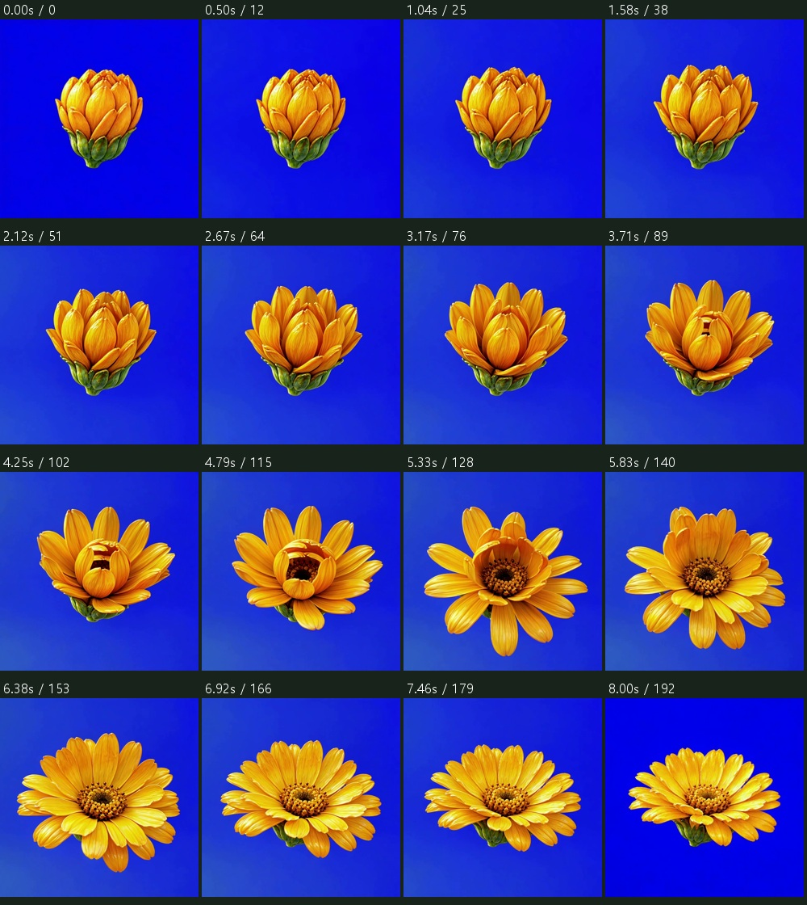
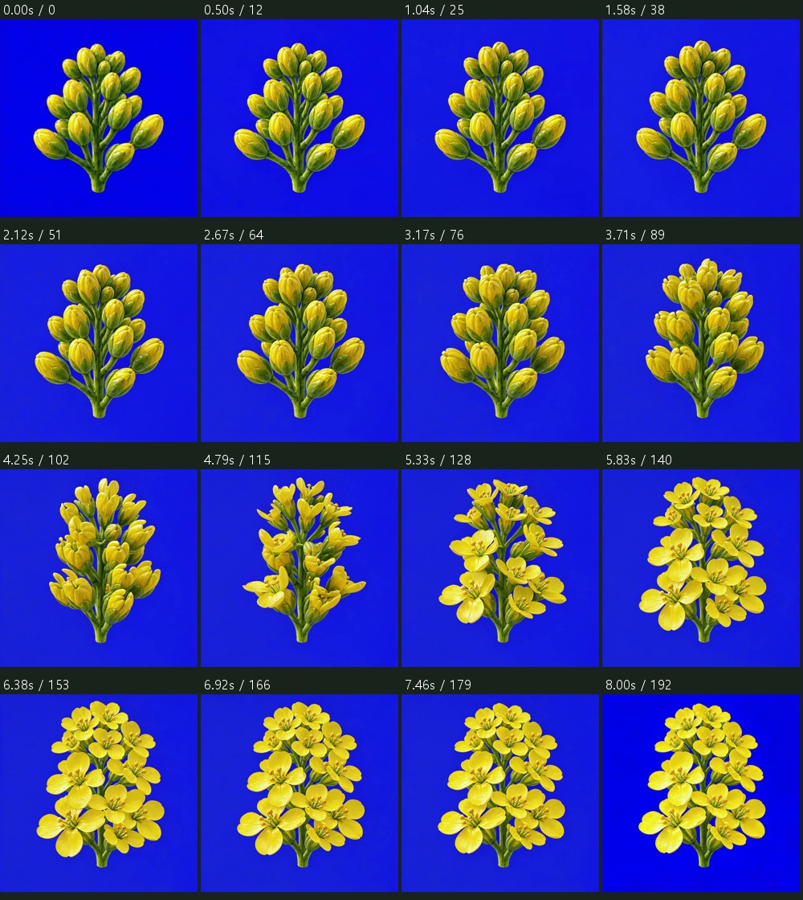
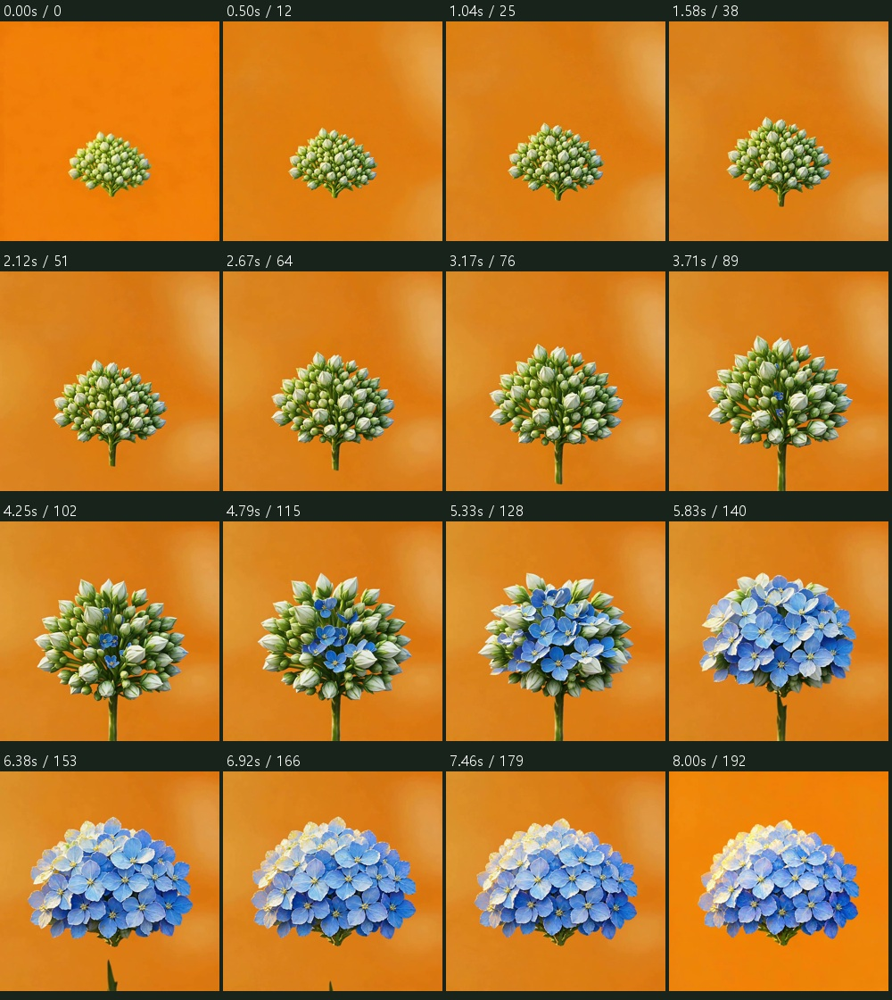
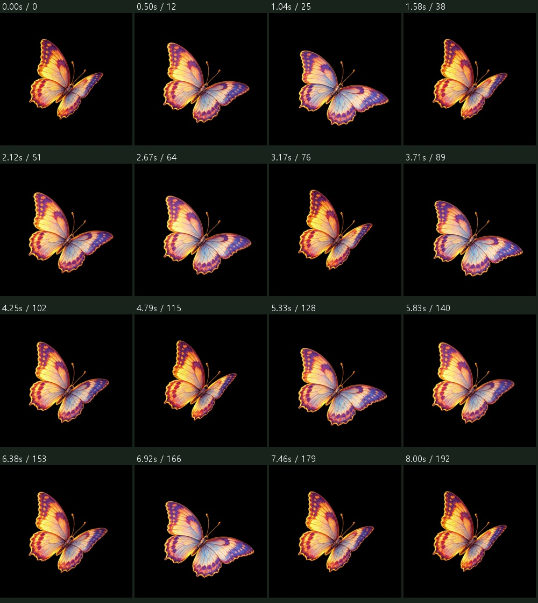
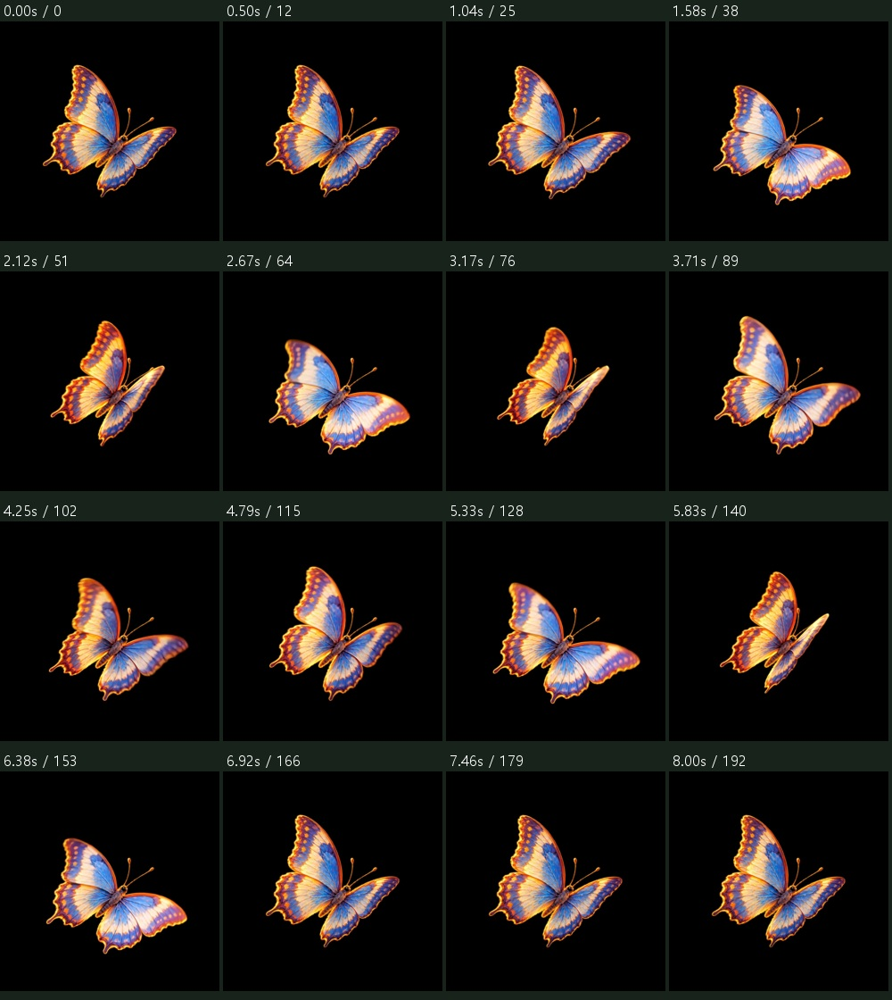

MAZELAND JEJU · 2026.10.22 · v40
봉오리가 실제로 펼쳐지는지,
중간 꽃잎까지 다시 확인합니다.
새로 승인된 5편을 각각 1회 생성한 원본과 검수 기록입니다. 생성 완료 5편 / 최종 승인 0편. 이 페이지의 영상은 전시 적용·업스케일 대상이 아닙니다.
반드시 지킬 개화 기준
- 생성한 봉오리·만개 두 이미지를 실제 시작·끝 입력으로 사용합니다.
- 봉오리에 있던 꽃잎이 연결된 상태로 차례로 벌어져야 합니다. 뭉개짐·부풀림·다른 꽃으로 교체·디졸브는 불합격입니다.
- 군집도 작은 꽃마다 자기 위치와 연결부를 유지해야 합니다. 여러 봉오리가 큰 꽃 하나로 합쳐지면 불합격입니다.
- 원본에 없던 줄기·잎·꽃·물체의 등장, 연결부 절단, 키 배경의 색·밝기 변화는 불합격입니다.
- 알파 분리나 업스케일로 개화 동작 오류를 숨기지 않습니다. 기존 꽃 16종의 후보 표시도 이 기준의 최종 승인을 뜻하지 않습니다.
꽃은 한 방향 개화만 재생합니다. 꽃 영상에 반복·역재생·전환 보정을 사용하지 않았습니다. 추가 유료 재시도는 실행하지 않았습니다.
BG02 / LT02 · F05 · 960×960 · 24fps · 193프레임
낮 · 옐로우 · 금잔화 A · 황금노랑
불합격 · 안쪽 꽃잎 전개
약 3.5–5.5초에 안쪽 꽃잎이 고리·가로띠처럼 이어져 보입니다. 붙어 있던 개별 꽃잎이 정상적으로 벌어지는 동작으로 승인할 수 없습니다. 키 배경의 색·밝기도 바뀝니다.
꽃잎·연결부 확대 비교 ↗
16시점 비교

193프레임 전체 비교 ↗ · 미승인 원본 MP4 · 이전 불합격본 기록
BG02 / LT02 · F08 · 960×960 · 24fps · 193프레임
낮 · 옐로우 · 유채꽃 B · 선명한 노랑
보류 · 키 배경 불합격 / 개화 동작 후보
큰 꽃 하나로 합쳐지던 오류는 보이지 않으며, 개별 봉오리에서 작은 꽃잎이 벌어집니다. 그러나 파란 배경의 밝기·색이 바뀌어 원본 키 영상은 불합격입니다. 꽃잎·꽃받침 연결부를 확대 비교한 1차 후보이며 최종 전시 승인 전입니다.
꽃잎·연결부 확대 비교 ↗
16시점 비교

193프레임 전체 비교 ↗ · 미승인 원본 MP4 · 이전 불합격본 기록
BG04 / LT04 · F13 · 960×960 · 24fps · 193프레임
아침 · 블루 · 수국 A · 하늘색
불합격 · 새 줄기 생성·절단
약 1.5–5.8초에 입력에 없던 긴 줄기가 자라고, 약 6.4–7초에 연결부가 끊어져 아래로 빠집니다. 흰 봉오리와 파란 꽃의 개별 조직 연속성도 승인하지 않았습니다. 키 배경의 색·밝기도 바뀝니다.
꽃잎·연결부 확대 비교 ↗
16시점 비교

193프레임 전체 비교 ↗ · 미승인 원본 MP4 · 이전 불합격본 기록
BG01 / LT01 · A03 · 960×960 · 24fps · 193프레임
노을 · 레드 · 노랑 나비
후보 · 제자리 동작 / 반복 경계 승인 전
검증한 검정 단색 원본으로 새로 생성했습니다. 전체 193프레임에서 머리 기준점 변화는 가로·세로 각 1px 범위입니다. 검정 배경은 유지됩니다. 반복 경계·정상 속도 10회·알파 검수는 아직 완료하지 않았습니다.
16시점 비교

193프레임 전체 비교 ↗ · 미승인 원본 MP4 · 이전 불합격본 기록
BG01 / LT01 · A04 · 960×960 · 24fps · 193프레임
노을 · 레드 · 파랑 나비
후보 · 제자리 동작 / 반복 경계 승인 전
검증한 검정 단색 원본으로 새로 생성했습니다. 전체 193프레임에서 머리 기준점 좌표 변화는 0px입니다. 검정 배경은 유지됩니다. 반복 경계·정상 속도 10회·알파 검수는 아직 완료하지 않았습니다.
16시점 비교

193프레임 전체 비교 ↗ · 미승인 원본 MP4 · 이전 불합격본 기록